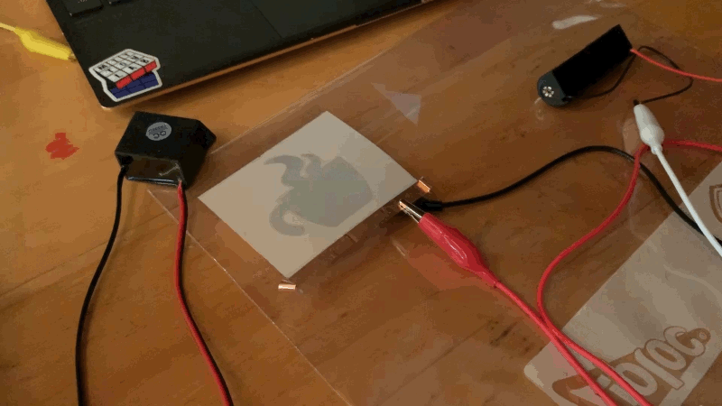
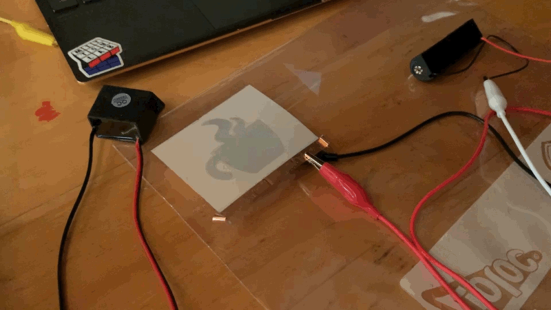
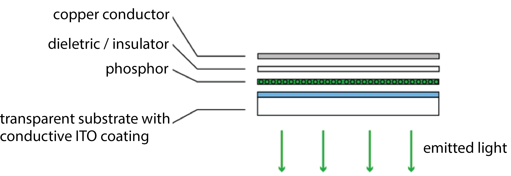
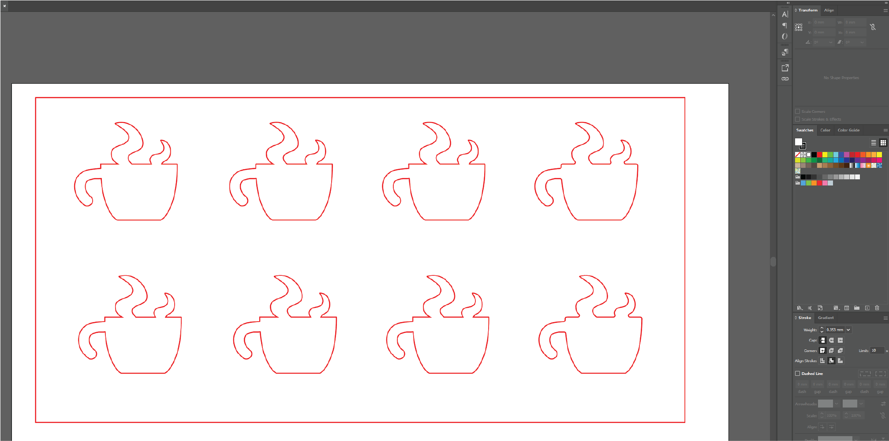
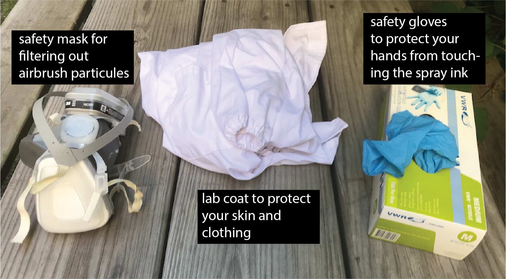

6.810 Engineering Interactive Technologies (fall 2021)
Lab 5: Spraying Electroluminescent Displays
In this lab, you will create the electrolumiscent display for the interactive mug from scratch using airbrushing.

 

Steps:
- Decide on Display Design
- Laser Cut Stencil for Copper Layer
- Put on Safety Wear
- Team Member 1: Prepare ITO and Spray Phosphor Layer
- Team Member 2: Spray Dieletric Layer
- Team Member 3: Spray Copper Layer with Stencil
- Remove Stencils and Tape
- Wire up the Display
Deliverables
At the end of the lab, upload to your student google drive:
- a short video (.mov or .mp4, max. 30s) showing how one of your displays turns on
Help us Improve Class Materials for Lab5:
Please let us know if you had any trouble with the design file or spray hardware.
You can add your comments here.
Group Work:
This lab is done in teams of 3 students. Each member of your team will spray one layer (phosphor, dieletric, copper) of the electrolumiscent display. Thus, all steps below should be discussed as a team and then a decision for the entire team should be made. After each layer/material, the airbrush has to be cleaned, which takes about 20 minutes, and the layer has to dry, which takes about 30 minutes. Thus, spraying the entire display will take ca. 3 hours.
Decide Spray Order for your Team: Decide which team member is going to spray what.
Enter the team member's name and spray times here in this google spreadsheet.
Laser Cut Stencil for Last Layer: You need to laser cut the stencil for the last layer (copper) before you can spray it. Thus, while team member 1 is spraying, the other two team members should laser cut the stencil in the mean time. You have about 2 hours to get this done, so there is no super rush but you should get going once you arrive at the IDC.

(1) Decide on Display Design
Making Custom Shaped Displays: To make your display have a particular shape, consider the following: The display will only glow in the locations that both have a top electrode (ITO sheet) and bottom electrode (copper). Any area that only has a top electrode (ITO) but is not covered by the bottom electrode (copper) will not glow. Thus, in order to make our display have a certain shape, we only need to remove material from either the top OR the bottom electrode, and not both. In our case, we will cover parts of the top layer with a stencil so that the sprayed copper will only be applied in the areas where the stencil has a cut-out. Thus, as a result, only those area will work as a display and glow.
Download Template Display Design (Coffee Cup): You can download our template design here. The design is a display shaped as a steaming coffee mug. As you can see, if contains several stencils in a row. This is because you will make 2 displays for each team member (8 in total) to ensure that a good number of them work (spraying a display is not easy, we will call it a success if 50% of your displays work, thus we have you fabricate some extra just in case). You may have noticed that the mugs are mirrored, i.e. the handle is on the left side not the right side. This is necessary because when we spray the stencil, it will form the bottom layer and the display will be flipped over in the end. Thus, if you forget about this you will have the handle on the wrong side. If you use our template design, move on to step (2) to laser cut the stencil, otherwise you can read below how you can make your own design.

Create Custom Display Designs: If you decide to make a custom display design, we still ask you to make 4 of our standard display designs (i.e. 4 coffee mugs + 4 custom designs). By doing this, the chance is higher that some of them will work. To make a new design, download the template design here and replace 4 of the 8 mugs with our own design while sticking to the following:
- stay within the boundaries (large square) in the design template
- 4 displays per row
- distance between individual displays in a row needs to be 25mm
- distance between display rows need to be 25mm
- your design should not contain delicate, thin elements (width <5mm)
- do not forget to
mirror your design at the end otherwise your display will not look as expected (e.g. the mug handle will be on the left side not right side where it should be)
Below is a video from last year when a team made their own design:
(2) Laser Cut Stencil for Copper Layer
Pick up Adhesive Sheet for Stencil: You will cut your stencil from an adhesive sheet. The adhesive part will make it easy to attach the stencil to the existing two display layers. We will give you the sheet when you arrive at the IDC.
Check Drawing Size and other Drawing Settings: Open the file in your drawing program and confirm that the stencil design has the right size. The mug should be 48mm x 46mm and the overall design should show 8 little mugs and an outline around them.
Laser Cut the Stencil: The power/speed settings for laser cutting a material depend on the material type and how thick it is. The laser cutter settings for our adhesive sheet are as follows: power: 40%, speed: 100%


(3) Put on Safety Wear
For spraying, you need to wear gloves, a lab coat, and a mask that filters out spray particles. We will give you your own lab coat and mask when you come in for spraying. Please keep them for later use in the semester.

Lab Coat: Put on the lab coat. Make sure to close all the buttons on the lab coat. For use in class, we bought disposable lab coats, so after the semester is over you can dispose it in the trash.
Gloves: Next, put on the gloves. Never touch an ink container, the inks, or a sprayed area directly with your hands. Touching the ink can lead to some particles being taken up through your skin, so we want to avoid this at all times.
Mask: Put on the mask. The mask will protect you so that you don't breath in any flying particles during the spraying process. We will have a disposable mask for each student so you don't have to share.
Safety Glasses: Now also put on your safety glasses so nothing can splash into your eyes.


(4) Team Member 1: Prepare ITO and Spray Phosphor Layer
Before we can spray the phosphor layer onto the ITO sheet, we have to do a few preparation steps.
Cut Cardboard: Cut out a piece of cardboard larger than the ITO sheet. While spraying, you will hold onto the cardboard since you need to cover the entire ITO sheet with spray paint, so make sure the ITO sheet has enough space around it.
Remove Protective Cover from ITO Sheet: Before you tape the ITO onto the cardboard, remove its protective cover foil. The ITO sheet is sensitive to bending so try to not bend the sheet too much while you pull off the cover foil.

Identify Conductive Side on ITO sheet: The ITO sheet is only conductive on one side (i.e. the side where we just removed the protective cover foil). We want to spray onto the conductive side, so it needs to face towards you. Use a multimeter to check which side is conductive. Imagine how frustrating it would be if your team mates sprayed the entire display stack just to find out at the end you sprayed on the wrong side of the sheet and nothing will work!
Tape ITO sheet to Cardboard: With the conductive side facing up, attach the ITO sheet with tape to the cardboard. Tape around the entire area of the sheet, it will help you later to see where you already sprayed since you can monitor the marks on the blue area around the ITO. Try to cover about 2cm of the ITO on each side. Don't cover more than that because you also need enough space for the EL displays. The taped areas will later be used to connect with a wire to the conductive ITO.
Spray Phosphor Layer: Load the phosphor ink into the spray gun and spray the entire area of the ITO with phosphor. While you spray, make sure you have some distance between the airbrush and the object. If you are too close drops will from on the surface leading to uneven coverage. Do a first pass across the entire sheet by moving you hand vertically, i.e. up and down, and then a second pass horizontally moving your hand left to right. Make sure the entire area has even coverage. If there is more phosphor in one area than another your display will have some brighter and some darker spots. Once you are done, the layer needs to dry at least 30 minutes before your team mate can spray the dieletric layer.

(5) Team Member 2: Spray Dieletric Layer
Next, we will spray the dieletric layer. Remember that the dieletric layer is super important. If the dieletric layer is not covering every single pixel there will be a short circuit in this area since the ITO sheet, phosphor layer, and copper layer (last layer) are all conductive and will touch each other and thus the display will not work.
Spray Dieletric Layer: Load the dieletric ink into the spray gun and spray the entire area of the ITO with dieletric ink. While you spray, make sure you have some distance between the airbrush and the object. If you are too close drops will from on the surface leading to uneven coverage. Do a first pass across the entire sheet by moving the hand vertically, i.e. up and down, then do a second pass horizontally moving the hand left to right. For both passes, you want to make sure the entire area has even coverage. If there is more dieletric in one area than another your display will have some brighter and some darker spots since there is more resistance in some areas than in others. Once the dieletric layer is done, it needs to dry at least 30 minutes before your team mate can spray the copper layer.

(6) Team Member 3: Spray Copper Layer with Stencil
Before we can spray the copper layer, you need to apply the stencil.
Apply Laser Cut Stencil: Peel the protective layer from the back side of the stencil foil to expose the adhesive side. Stick the stencil on top of the sprayed layers. Make sure that your stencil covers the entire ITO sheet and there are no areas not covered by the stencil. When you apply the stencil, don't apply to much pressure so you don't damage the underlying layers.
Spraying the Copper: Load the copper ink into the spray gun and spray the entire area of the ITO with copper. While you spray, make sure you have some distance between the airbrush and the object. If you are too close drops will from on the surface leading to uneven coverage. Do a first pass across the entire sheet by moving you hand vertically, i.e. up and down, and then a second pass horizontally moving your hand left to right. Make sure the entire area has even coverage. If there is more copper in one area than another your display will have some brighter and some darker spots since some areas are more conductive. Once you are done, the layer needs to dry at least 30 minutes.

(7) Remove Stencils and Tape
You are done with spraying and now need to remove the displays from the cardboard.
Remove the stencil, peel off the blue tape around the ITO sheet, and then take the displays off the cardboard.

(8) Wire up the Display
Connect Display to Circuit: Wiring up your display to see if it actually works takes another 20-30 minutes. In case you have to run out, don't worry, you can test your display in the next class. Only one of your team members has to do the wiring/testing, so if one from your team can stick around to do the next steps that would be best but not required.
Test Conductivity of Copper with Multimeter: Before wiring up the displays, let's test how conductive the copper layer is. This gives a good first estimate if the display will work or not. Use a multimeter and check if the copper layer is conductive. The tips of the multimeter are quite pointy and can damage the layers if you press too harshly on the copper, so be gentle.
A good resistance would be around 10Ω. Anything higher than 50Ω will likely not work.
Wire Connection to ITO and Sprayed Copper Layers: Before we can power up our display, we need to create a wire connection to the ITO and sprayed copper layer that will serve as GND and power. For this, we are using copper tape, which can later be connected to a crocodile clamp. Read more below on how to do it.

Attach Copper Tape to ITO sheet: First, attach copper tape to the ITO sheet as shown below.
Attach Copper Tape to Sprayed Copper layer: Cut the display sheet into individual displays, and then attach a copper tape flap. The flap should cover a large area on the display to make a good connection.

Test your Display: Next, attach a crocodile clamp to the copper tape on the ITO and the copper tape on the sprayed copper and see if your display lights up. Once you tested all your displays, you can either leave them with us in a zip bag and we will store them for you on the class shelve or take them home (please be careful during transport to not apply too much pressure to the display and don't squish it in your bag).


Deliverables
At the end of the lab, upload to your student google drive:
- a short video (.mov or .mp4, max. 30s) showing one of your displays turn on
Please let us know if you had any trouble with the design file or spray hardware.
You can add your comments here.
Enter the team member's name and spray times here in this google spreadsheet.
mirror your design at the end otherwise your display will not look as expected (e.g. the mug handle will be on the left side not right side where it should be)